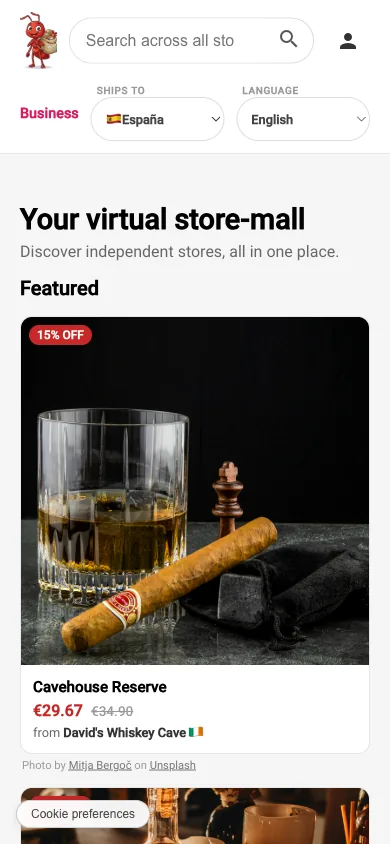
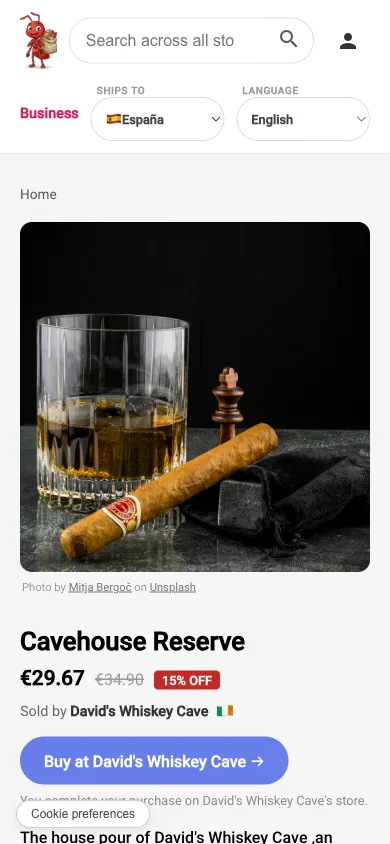
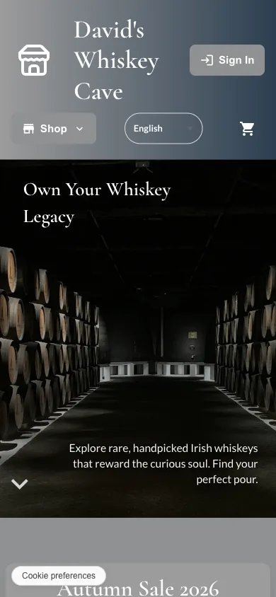
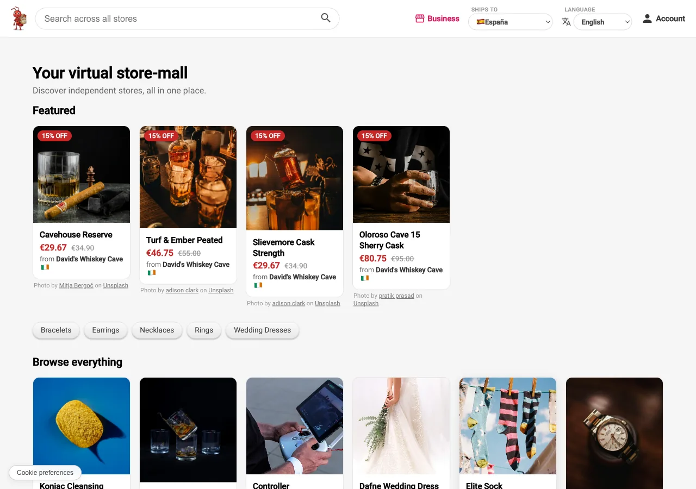
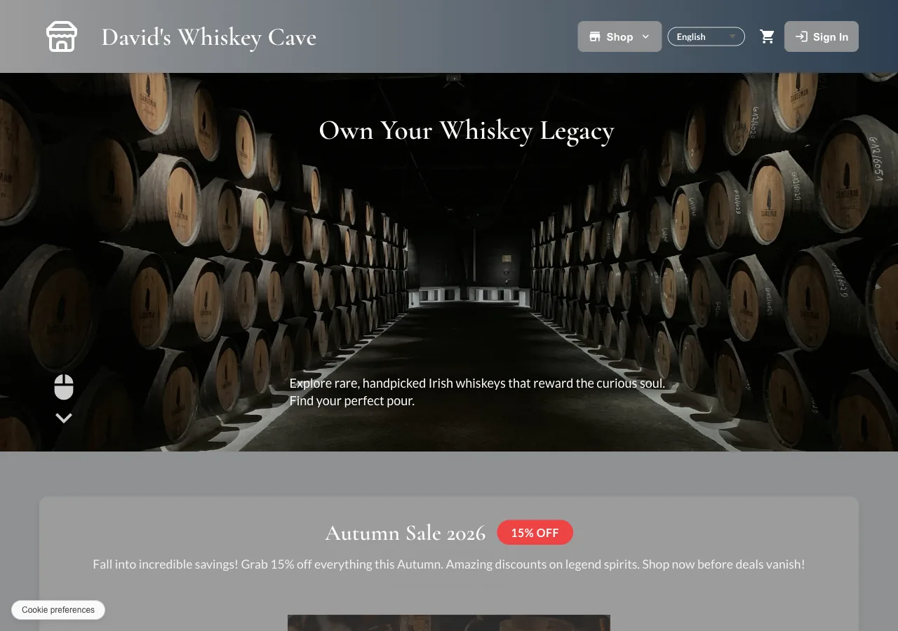

Every table that holds store data carries a store_id, and
Postgres row-level security enforces the boundary inside the database
itself — not in application code that could have a bug in it. The one
deliberate exception is the mall's own catalog: it reads across every store
without that filter, but only active products from stores that have opted
in to being listed. An order or a customer record never crosses that
line.

Store·Mall is built for the EU market. The platform itself — the admin side, and the records it keeps — works in two canonical languages, English and Spanish. The stores talk to their shoppers in eight: English, Spanish, Portuguese, German, French, Italian, Dutch and Polish, which by the official language of each member state cover roughly four in five people in the EU.
Catalogue content and storefront strings are translated by Claude, mostly the smaller Haiku model, into a column a store owner reviews afterward rather than approves in advance. Each string is tagged Native, Curated, or Machine, so a shopper can tell what they're reading.
Store owners sign in through their own auth system, entirely separate from the one shoppers use. From there they manage products and inventory, process orders, configure the store's theme and shipping, run promotions, and use the built-in AI tools for descriptions and content. The first time in, a five-step setup guide walks a new owner through catalog, branding, markets and money, shipping, and the legal pages before the store can go live. Getting an owner account at all still needs approval — there's no self-serve signup on that side yet.
The tricky part wasn't translating text, it was deciding what stays canonical when two people write in different languages and one of them is being asked a compliance question. An admin — who only works in English — might ask a prospective store owner something like "do you hold a licence to ship alcohol within the EU?" The owner could be anywhere from Warsaw to Lisbon. Translate that carelessly and you've introduced ambiguity into a legal record.
So the admin always authors and reads in English, full stop. Everything sent to an owner is translated at the point it's dispatched, not at the point it's written — derived from the store's market, not a language the owner has to pick themselves. The owner answers in their own words, and that reply is kept exactly as typed; the English version shown to the admin is a courtesy rendering layered on top, never a replacement. Either side can always see the original.
That split — one canonical text, a translated rendering on top, decided once and enforced at a single boundary — is what lets a new market's language get added without touching the admin side at all. The two-language constraint on the admin team isn't a limitation the platform works around; it's the thing the design makes irrelevant.
Angular 22 — standalone, zoneless, signals — on an Express/Node backend. Supabase for Postgres, auth, and storage. Stripe for payments. Hosted on Vercel and Railway. Roughly 80,000 lines, in a private repository.
It's live at store-mall.com/mall — go look around. Nothing there is a real business yet; the tenants are demonstration stores standing in for the real ones this is built to hold.